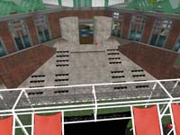

Borders, Boundaries & Liminal Spaces

to get to the site Learning(169,171,26):
- you must join the NMC Guest Group (which is free)
- to do this in second life :
- go to Edit>Search (or use Cmd-F)
- enter NMC in the box and click the Search button
- choose the NMC Guests group by clicking on it
- click the Join(L$0) button
- you can close the window by clicking on the x in the upper right corner
then you may follow this slurl: http://slurl.com/secondlife/Learning/169/171/26/ or go to
to get the audio stream you will need to enable video streaming:
- go to Edit>Preferences (or use Cmd-P)
- in the Audio & Video Tab, check Play Streaming Video When Available
- this should create a video tab in the window above or near the search button
- click the play button in this tab
you may also listen to the audio stream by opening this URL in quicktime
rtsp://130.65.200.10:80/session.sdp
hosted at: Amphitheater on Learning (169,171,26)
http://slurl.com/secondlife/Learning/169/171/26/
Note that all participants will have to first join the NMC guests group in Second Life prior to teleporting to here.